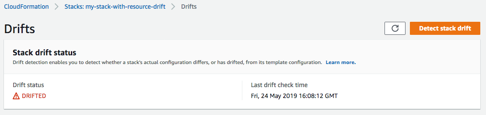

Le traduzioni sono generate tramite traduzione automatica. In caso di conflitto tra il contenuto di una traduzione e la versione originale in Inglese, quest'ultima prevarrà.
Rileva la deriva su un'intera CloudFormation pila
L'esecuzione di un'operazione di rilevamento della deviazione su uno stack determina se lo stack risulta deviato dalla relativa configurazione di modello prevista e restituisce informazioni dettagliate sullo stato di deviazione di ogni risorsa nello stack che supporta il rilevamento della deviazione.
Per rilevare la deriva su un'intera pila utilizzando il AWS Management Console
Apri la AWS CloudFormation console all'indirizzo https://console.aws.amazon.com/cloudformation.
-
Dagli elenchi di stack, selezionare lo stack su cui eseguire il rilevamento delle deviazioni. Nel riquadro dei dettagli dello stack, scegliere Stack actions (Operazioni stack), quindi scegliere Detect drift (Rileva deviazioni).

CloudFormation visualizza una barra informativa che indica che il rilevamento della deriva è stato avviato per lo stack selezionato.
-
Attendere il CloudFormation completamento dell'operazione di rilevamento della deriva. Al termine dell'operazione di rilevamento della deriva, CloudFormation aggiorna lo stato di Drift e l'ora di verifica dell'ultima deriva per lo stack. Questi campi sono elencati nella sezione Overview (Panoramica) del riquadro Stack info (Info stack) della pagina dei dettagli dello stack.
L'operazione di rilevamento della deviazione può durare vari minuti, a seconda del numero di risorse incluse nello stack. È possibile eseguire una sola operazione di rilevamento della deriva su un determinato stack alla volta. CloudFormation continua l'operazione di rilevamento della deriva anche dopo aver chiuso la barra delle informazioni.
-
Esaminare i risultati del rilevamento della deviazione per lo stack e le relative risorse. Con lo stack selezionato, dal menu Stack actions (Operazioni stack), selezionare View drift results (Visualizza risultati deviazione).
CloudFormation elenca lo stato generale della deriva dello stack, oltre all'ultima volta in cui è stato avviato il rilevamento della deriva sullo stack o su una delle sue singole risorse. Uno stack è considerato come deviato se una o più delle relative risorse risultano deviate.
Nella sezione Resource drift status, CloudFormation elenca ogni risorsa dello stack, il relativo stato di deriva e l'ultima volta in cui è stato avviato il rilevamento della deriva sulla risorsa. L'ID logico e l'ID fisico di ogni risorsa sono visualizzati per consentirti di identificarla. Inoltre, per le risorse con stato MODIFICATO, visualizza i dettagli sulla deriva delle risorse. CloudFormation
È possibile ordinare le risorse in base al loro stato deviazione, utilizzando la colonna Drift (Deviazione).
-
Per visualizzare i dettagli su una risorsa modificata
-
Con le risorse modificate selezionate, selezionare View drift details (Visualizza dettagli deviazione).
CloudFormation visualizza la pagina di dettaglio della deriva per quella risorsa. Questa pagina elenca i valori di proprietà previsti e correnti della risorsa e le differenze tra gli stessi.
Per evidenziare una differenza, nella sezione Differences (Differenze) selezionare il nome della proprietà.
-
Le proprietà aggiunte vengono evidenziate in verde nella colonna Current (Corrente) della sezione Details (Dettagli).
-
Le proprietà eliminate vengono evidenziate in rosso nella colonna Expected (Previsti) della sezione Details (Dettagli).
-
Le proprietà il cui valore è state modificato sono evidenziate in giallo nelle colonne Expected (Previsti) e Current (Correnti).
-
-

-
Per rilevare la deriva su un'intera pila utilizzando il AWS CLI
Per rilevare la deriva su un'intera pila utilizzando il AWS CLI, utilizzate i seguenti comandi: aws
cloudformation
-
detect-stack-driftper avviare un'operazione di rilevamento della deviazione su uno stack. -
describe-stack-drift-detection-statusper monitorare lo stato dell'operazione di rilevamento della deviazione di stack. -
describe-stack-resource-driftsper esaminare i dettagli dell'operazione di rilevamento della deviazione di stack.
-
Utilizzare
detect-stack-driftper rilevare la deviazione su un intero stack. Specificare il nome o l'ARN dello stack. È anche possibile specificare gli ID logici delle risorse che si desidera utilizzare come filtri per questa operazione di rilevamento della deviazione.$aws cloudformation detect-stack-drift --stack-namemy-stack-with-resource-drift{ "StackDriftDetectionId": "624af370-311a-11e8-b6b7-500cexample" } -
Poiché le operazioni di rilevamento della deviazione di stack possono durare parecchio tempo, utilizzare
describe-stack-drift-detection-statusper monitorare lo stato dell'operazione di rilevamento. Questo comando utilizza l'ID rilevamento della deviazione di stack restituito dal comandodetect-stack-drift.Nell'esempio seguente, abbiamo passato come parametro a
describe-stack-drift-detection-statusl'ID rilevamento della deviazione di stack restituito dall'esempiodetect-stack-driftprecedente Il parametro restituisce i dettagli dell'operazione che mostrano che l'operazione di rilevamento della deviazione è stata completata, che una singola risorsa di stack risulta deviata e che di conseguenza l'intero stack è considerato come deviato.$aws cloudformation describe-stack-drift-detection-status --stack-drift-detection-id624af370-311a-11e8-b6b7-500cexample{ "StackId": "arn:aws:cloudformation:us-east-1:099908667365:stack/my-stack-with-resource-drift/489e5570-df85-11e7-a7d9-50example", "StackDriftDetectionId": "624af370-311a-11e8-b6b7-500cexample", "StackDriftStatus": "DRIFTED", "Timestamp": "2018-03-26T17:23:22.279Z", "DetectionStatus": "DETECTION_COMPLETE", "DriftedStackResourceCount": 1 } -
Al termine dell'operazione di rilevamento della deviazione di stack, utilizzare il comando
describe-stack-resource-driftsper esaminare i risultati, inclusi i valori di proprietà correnti e previsti per le risorse deviate.L'esempio seguente utilizza il parametro
stack-resource-drift-status-filtersper richiedere le informazioni sulla deviazione di stack per le risorse che sono state modificate o eliminate. La richiesta restituisce informazioni sulla risorsa che è stata modificata, tra cui dettagli su due proprietà della stessa i cui valori sono stati modificati. Nessuna risorsa è stata eliminata.$aws cloudformation describe-stack-resource-drifts --stack-namemy-stack-with-resource-drift--stack-resource-drift-status-filters MODIFIED DELETED{ "StackResourceDrifts": [ { "StackId": "arn:aws:cloudformation:us-east-1:099908667365:stack/my-stack-with-resource-drift/489e5570-df85-11e7-a7d9-50example", "ActualProperties": "{\"ReceiveMessageWaitTimeSeconds\":0,\"DelaySeconds\":120,\"RedrivePolicy\":{\"deadLetterTargetArn\":\"arn:aws:sqs:us-east-1:099908667365:my-stack-with-resource-drift-DLQ-1BCY7HHD5QIM3\",\"maxReceiveCount\":12},\"MessageRetentionPeriod\":345600,\"MaximumMessageSize\":262144,\"VisibilityTimeout\":60,\"QueueName\":\"my-stack-with-resource-drift-Queue-494PBHCO76H4\"}", "ResourceType": "AWS::SQS::Queue", "Timestamp": "2018-03-26T17:23:34.489Z", "PhysicalResourceId": "https://sqs.us-east-1.amazonaws.com/099908667365/my-stack-with-resource-drift-Queue-494PBHCO76H4", "StackResourceDriftStatus": "MODIFIED", "ExpectedProperties": "{\"ReceiveMessageWaitTimeSeconds\":0,\"DelaySeconds\":20,\"RedrivePolicy\":{\"deadLetterTargetArn\":\"arn:aws:sqs:us-east-1:099908667365:my-stack-with-resource-drift-DLQ-1BCY7HHD5QIM3\",\"maxReceiveCount\":10},\"MessageRetentionPeriod\":345600,\"MaximumMessageSize\":262144,\"VisibilityTimeout\":60,\"QueueName\":\"my-stack-with-resource-drift-Queue-494PBHCO76H4\"}", "PropertyDifferences": [ { "PropertyPath": "/DelaySeconds", "ActualValue": "120", "ExpectedValue": "20", "DifferenceType": "NOT_EQUAL" }, { "PropertyPath": "/RedrivePolicy/maxReceiveCount", "ActualValue": "12", "ExpectedValue": "10", "DifferenceType": "NOT_EQUAL" } ], "LogicalResourceId": "Queue" } ] }